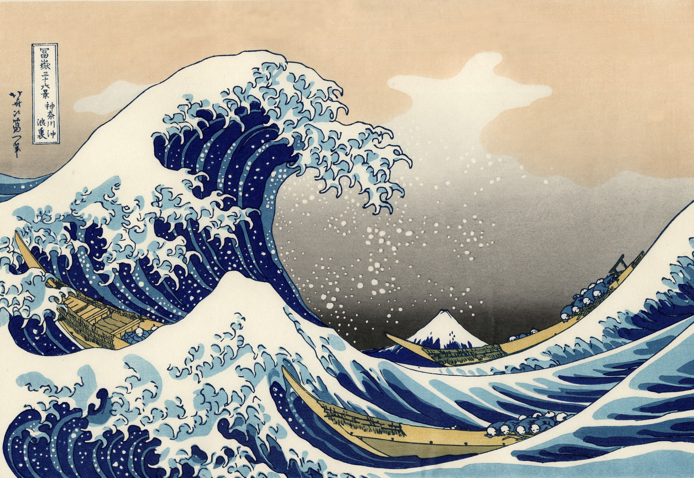

Waraiguma · Bobin Maker
…
IL MARE ARTIGIANO
Colore selezionato
#FFFFFF

Colore attuale
#FF3B3B
Seleziona colore
Scopri i colori dell’Onda
La mia palette
Struttura del filato
Tinta personalizzata
Contagocce colore
Geometria rocchetto
Aspetto del filato
Opaco come la lana grezza, o lucido come la seta.
Opaco
lana
lana
Semi
cotone
cotone
Lucido
seta
seta
«Tu butti qualcosa al mare, e il mare te lo restituisce lavorato, finito, levigato… Lui fa solo pezzi unici e irripetibili, come le opere d'arte.»
— Bruno Munari
Waraiguma · Il Mare Artigiano